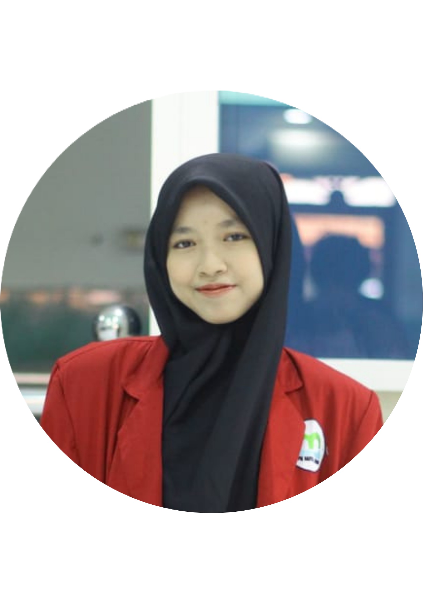

ata-annisa.dev
https://ata-annisa.dev
Halo, aku Ata.
Mahasiswa S1 Teknik Informatika semester 5 di Universitas Negeri Surabaya (UNESA). Membangun aplikasi web full-stack, dengan minat di application security: autentikasi, pengelolaan akses, dan analisis kerentanan.

About & tech stack
do you want to know more?
Mahasiswa S1 Teknik Informatika yang memiliki pengalaman dalam pengembangan aplikasi web dan pemahaman backend development, database, jaringan komputer, dan keamanan informasi. Memiliki ketertarikan pada pengembangan sistem berbasis web dan application security, khususnya autentikasi, pengelolaan akses, dan analisis kerentanan.
Pendidikan:
- UNESA, S1 Teknik Informatika (semester 5, 2024 sampai sekarang)
- MAN 2 Lamongan, MIPA (2021 sampai 2024)
Pengalaman:
Bendahara Panitia LDK PPPM BM (2025)
- Merencanakan, mengelola, serta memantau anggaran biaya selama kegiatan LDK.
- Berkoordinasi dengan seluruh divisi kepanitiaan yang berjumlah 39 dalam memverifikasi pengajuan dana serta validasi bukti pembayaran kebutuhan acara dengan 40+ peserta.
Bahasa: Indonesia (native), Inggris (intermediate).
Lihat CV ATSKlik salah satu ikon untuk lihat detail keahliannya.